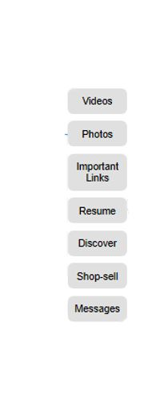
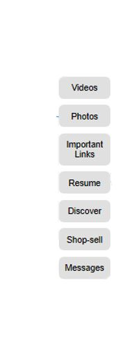

....Redirecting:App (try Now!: An app that tells you whether you have over-paid)
what inspired me:
i was inspired by instagrams toxic environment
and wanted to create a fun ,less toxic place.
Our business model:inspired by instagram
i was like ,since instagram is a place for, flexing
the obscene number of wealth u have what
would be a bigger flex than to having
pay to follow,post,
upload,comment,like,etc...thats a bigger flex,actually spending money
other inspirations: Microsoft
i was inspired by microsoft,especially by mr
bill gates.what specifically inspired me, was their
ui,design.Most of their products are
usually goodly designed,except the cloud business ,which
in my opinion is a business most ordinary people
dont care about much, as they would rather store
their files locally than have them stored
somewhere remote and rarely use it ,in conclusion
it is a business i would ,rather stay away from
...but if i was to venture /dubble in it i would
call it Freaky Storage By A Distance.also ,additionally by the fact that
originally i wanted to build something to sell to Microsoft
(originally i wanted to work for them-i still do,but only because i want their team to
help me design Pink Flower Messaging System(a whatsapp Alternative)).


 
